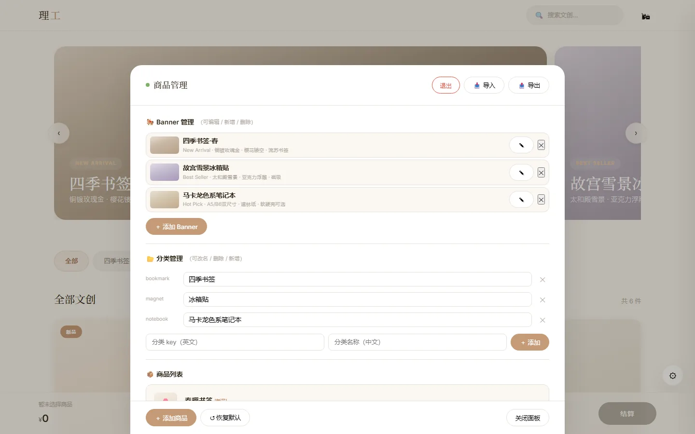
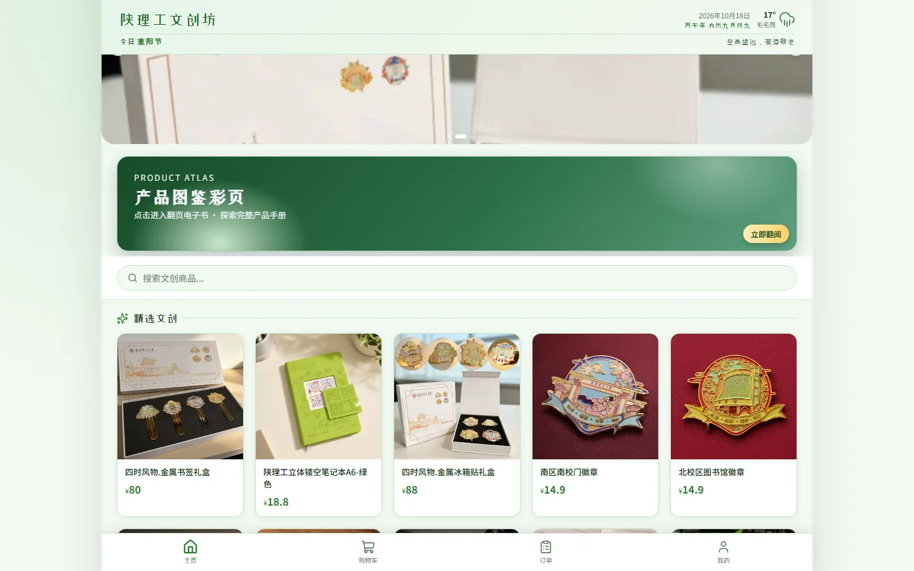
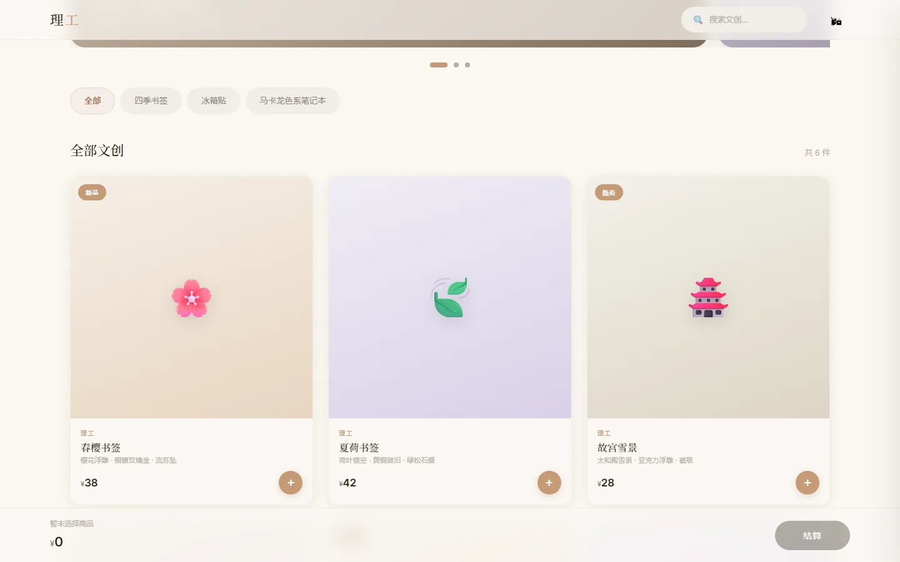
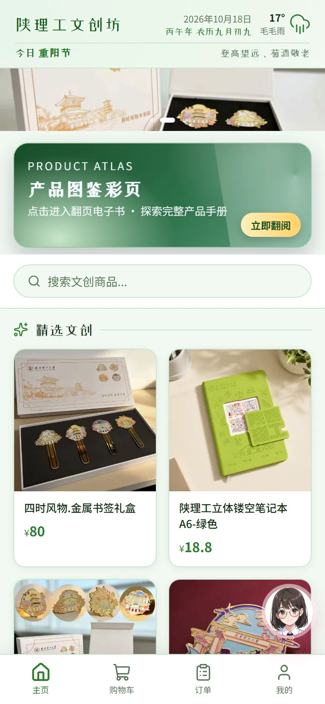
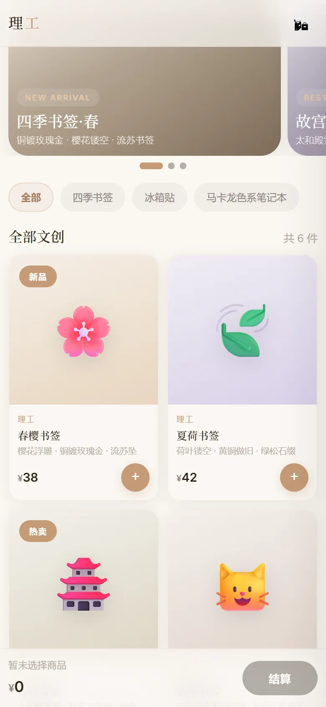

CASE STUDY · 2026 · 电商设计
理工文创 小店
一版是我做的概念稿：消费者端与管理端两个页面，纯静态、零框架、双击即用。 另一版是学校官方在用的商店：真实商品、真实下单。两版并排看，差距和取舍都清楚了。

SIDE BY SIDE · 两版并置
概念稿与官方在售版
左边是官方正在用的商店，右边是我做的概念稿。一个偏货架，一个偏品牌页； 一个能下单，一个只能演示。两边都截自 2026 年 10 月 18 日的线上版本。

官方在用 · 陕理工文创坊
19 件在售商品，实拍图、真实价格。后端提供商品与 Banner， 有购物车、结算与订单页；登录后接收物流更新。
打开官方站 ↗
我的概念稿 · 消费者版
6 件概念样例，商品图用 emoji 占位。购物车与结算能走通， 但只存在当前页面，刷新就清空。
打开概念版 ↗手机端 · 同一天截图


SPEC · 对照
差在哪，一眼看完
技术栈和完成度不同，设计目标也不同。这张表只列事实，不替任何一边说好话。
- 商品数据
- 官方在用：19 件在售，真实价格与在售状态
- 我的概念稿：6 件样例，虚构价格
- 数据来源
- 官方在用：后端 API（商品、Banner、天气）
- 我的概念稿：页面内置数组
- 购物流程
- 官方在用：购物车、结算、订单
- 我的概念稿：演示购物车，刷新即清空
- 账户体系
- 官方在用：登录 · 我的 · 订单
- 我的概念稿：无
- 实时能力
- 官方在用：SignalR 推送物流更新（登录后）
- 我的概念稿：无
- 管理端
- 官方在用：站点未提供入口，数据由官方后台维护
- 我的概念稿：密码门控 · 商品 / Banner / 分类 CRUD
- 部署
- 官方在用：后端服务（API + SignalR）
- 我的概念稿：GitHub Pages 静态托管
- 设计取向
- 官方在用：货架优先，信息密度高
- 我的概念稿：品牌感优先，留白多
官方站数据取自其公开接口，抓取日期 2026-10-18；概念稿商品为虚构样例。
NOTES · 说明
对照之后，我留下的三条
-
真图比占位符重要
同一件商品，实拍能传达材质、工艺和尺寸感，emoji 只能表达类别。 官方站全部用实拍图，我的概念稿全用 emoji 占位，气质差了一截。 下一步先把样品拍齐，再谈排版。
-
货架要密，品牌页要松
官方站桌面端一屏五列，19 件商品铺开，方便比价和挑选； 我的概念稿三列，留白多，更像品牌首页。两种取向没有对错， 但消费者端的首要任务是让人快速找到东西，这点官方站做得更直接。
-
数据要有来源，双端要能互通
官方站的商品来自后端 API，管理端改完，消费者端就能看到。 我的概念稿把商品写死在页面里，管理端的修改只存本机浏览器， 消费者端不会同步。要做到双端共享，必须接一层后端。